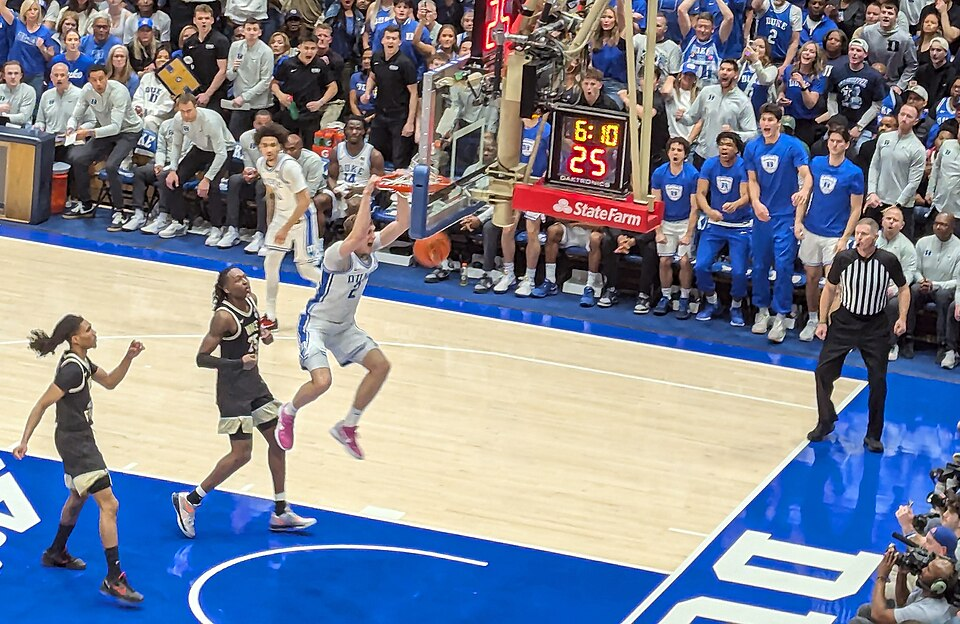

More Than the Box Score
NBA players are often judged by simple statistics such as points, rebounds, and assists, but often those numbers do not always tell the entire story.
A player's role, shot selection, responsibility, playing style, strengths, and weaknesses can all help show how they actually impact the game.
This website looks at Cooper Flagg and Dylan Harper, the first two picks in the 2025 NBA Draft. Each player page looks at their background, career, playing style, skills, strengths, weaknesses, player archetype, and shot profile.
How players are analyzed
Background & Career
Where did the players come from? Where did they play before entering the NBA? When was the player drafted? This section provides the important background information needed to understand the start of each player’s career.
Playing Style
Every player impacts a basketball game differently. Some players rely on shooting, while others attack off the ball, create shots for teammates, defend multiple positions, or do a mix of everything. Playing style explains how a player normally creates an impact when he is on the court.
Skills
• Scoring • Shooting • Finishing • Ball handling • Passing • Defense • Rebounding • Athleticism
Strength and Weaknesses
No NBA basketball player is without flaws. The strengths section describes what that player does best, while the weaknesses area details what issues they might have or areas in which they could improve.
Player Archetyper
A player's archetype can be thought of as a general descriptor for a player's overall game. This can range from a playmaking guard to a two-way wing, shot-creating forward, defensive specialist, or a stretch big man.
Shot Profile
Where a player takes his shots can tell you a lot about his game. As the years developed, the average shot distance went further back. The pages on players will explore shots around the basket, short range, mid range attempts, and three pointers. The shot profile will tell you how each player scores.
Players


How I Analyze Players
The player analysis on this website goes beyond basic statistics. I look at each player's background, road to the NBA, offensive and defensive skills, strengths, weaknesses, playing style, player archetype, and shot profile.